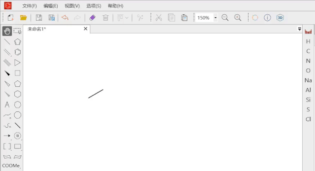

KingDraw 看着简单，这几个坑我都踩过
红框去不掉、键长对齐不了、云同步踩空、AI 识别放飞——过来人把 KingDraw 最常见的几个翻车点扒一扒，附防坑速查表。
KingDraw官网 上手确实快，点几下就能画出像样的结构式，手机上拍张照 AI 直接给你转出来——但我用了快两年，踩的坑也不少，有些一度以为是自己电脑坏了要重装。这篇把我遇到过的、身边同学也常问的几个典型翻车点整理一下，提前知道能省不少时间。
坑一：画完的结构外面套着红框，删不掉
症状：结构式好好的，外面多了一圈红色虚线框，看起来像没处理干净的选区。导出图片时倒是不会带进去，但在画板上碍眼得很，存了再打开还在。
原因：绝大多数情况是你刚用完框选工具（快捷键 Q）但没取消。框选工具是"激活态"，只要还在这个状态，画板上选中过的元素就会一直带红框。少数情况下是 AI 图像识别或智能美化之后留下的临时标记——那一圈红框其实是识别引擎的"已加工"标记，不是真正的选区。
解法：
- 最直接——按
Esc，或者点一下画板空白处，红框秒消失； - 如果是 AI 留下的，切换到拖拽工具再切回来也行；
- 极端情况（比如切了工具还在），全选
Ctrl+A然后剪切再粘贴，相当于让引擎重新渲染一遍那个结构，红框就没了。
防这个坑的习惯很简单：画完一个片段就顺手点一下拖拽工具，别让框选/选元素之类的工具一直挂着。移动端的话双击空白处最快。
坑二：键长忽长忽短，怎么拉都对不齐
症状：整个结构看起来歪歪扭扭，有的键特别长有的特别短，你手动拖了半天还是找不到手感——按了智能美化也没救。
原因：大概率是你拖键的时候点错了位置。KingDraw 的框选工具对键的操作非常敏感：点在键的中间，整条键会被选中并整体移动；只有点在端点，才能单独伸缩那一个端点。如果你一直点中间在拖，相当于在搬整条键，根本没调长度。还有一种情况是画板缩放比例变了，视觉上觉得键长不一样，但其实是同长度——先按 Ctrl+0 把缩放重置到 100% 再判断。
解法：
- 用框选工具（
Q），点键的端点（那个小圆点），而不是键中间； - 调完单条还是乱？全选
Ctrl+A然后点智能美化——这一步会把所有键长自动对齐到标准值，同时优化键角，适合 AI 识别来的结构或手势快速画的草图； - 画新键的时候别光点一下，拖动鼠标决定键的长度再松开——默认点一下就是标准键长，但拖动可以在绘制时就定好你要的长度。

我后来形成了一个习惯：画完任何一个比较复杂的结构，不管看着齐不齐，先按一次智能美化再说——这一步 90% 的键长和键角问题都能自动修掉，省得你一条一条去调。具体的键长调整技巧和快捷键，KingDraw文档上有完整说明，碰到调不动的情况去翻一下比瞎试强。
坑三：云同步没生效，换设备打开文件不见了
症状：手机上画好保存了，回办公室打开 PC 版，云端文件列表里没有刚才那个文件，或者有旧版本没有最新修改。
原因：首先得确认你两个端都用同一个 KingDraw 账号登录了——这个是前提，没登录的话本地文件就是本地文件，跟云端没关系。其次，云同步依赖网络，实验室里信号不好的时候保存操作会直接写本地，等回到有网络的环境才会自动上传，所以你在 PC 端立刻打开是看不到的。还有一个常被忽略的点：如果你同时在两个设备上编辑同一个文件，后保存的版本会覆盖先保存的，甚至可能两边都以为自己是最新的。
解法：
- 跨设备工作的流程固定成：设备 A 保存 → 等一下（确认上传完成）→ 设备 B 打开；
- 敏感项目不想上传的话，不登录账号也能用 KingDraw，定期从下载页面手动拿最新版，导出
.king文件备份到 U 盘就好； - PC 版左侧文件管理区分"本地"和"云端"两块，可以互相拖拽，也能在文件上右键选「上传到云端」手动触发一次同步，比等自动稳。
坑四：AI 图像识别完我直接用了，结果全是错的
症状：拍了一张文献上的反应机理，AI 识别出来看起来也像那么回事，导出之后才发现双键位置错了、有个 N 被识别成 C、立体楔形键丢了——论文里插进去才发现，尴尬得要死。
原因：AI 识别不是 100% 准确，它对清晰高对比度的图片识别率高，但对复杂多环、密集键线、模糊拍的 PPT 截图，准确度会明显下降。还有一点，元素缩写基团（比如 Me、Ph、t-Bu）AI 不会帮你补画完整结构，立体化学标记（R/S、顺反异构）也经常丢失或标错。这些不是 bug，是当前 AI 识别能力的边界。
解法：
- 识别完第一件事是校对——重点查双键位置（尤其是芳香环、共轭体系）、杂原子标记（N/O/S）、环的大小（5 元环别被识别成 6 元）；
- 图片越清晰识别越准：光线均匀、无阴影、只包含一个或少量结构式的图片效果最好；
- 移动端专属功能，PC 版暂时没有——但你可以在手机上识别完存成
.king文件，同步到 PC 端再精修；

防坑速查清单
- 红框：
Esc或点空白处秒消，别用框选工具就别让它挂在激活态； - 键长：调长度点键端点不是中间，画完先按一次智能美化；
- 云同步：确认两端同账号登录，保存后等一下再换设备打开；
- AI 识别：识别完必校对，重点查双键、杂原子、立体化学标记，缩写基团自己补。
说穿了 KingDraw 没什么硬核门槛，这几个坑也都是"知道了就好"的类型——但第一次遇到时真的会让人怀疑人生。我整理的一些结构式模板和排查笔记，分别传到了 GitHub、Gitee 和 GitCode，三个仓库内容同步，国内访问哪个方便就用哪个。知道这些坑之后，这软件其实相当省心。